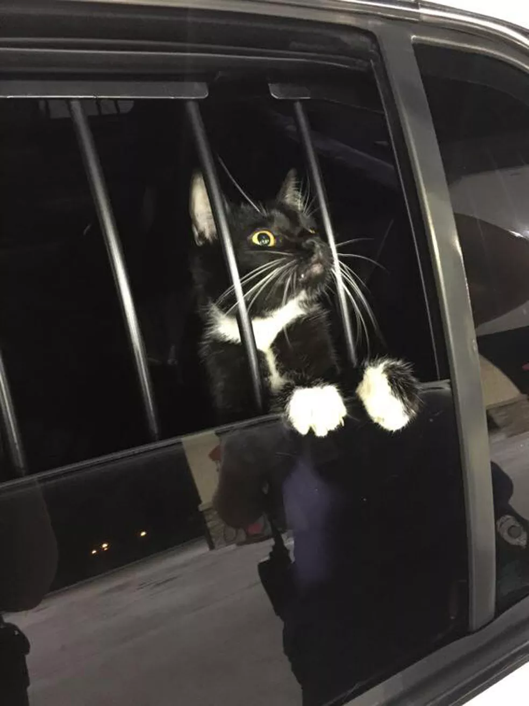

Gato é 'preso' suspeito de furto nos EUA
Família chamou polícia da Flórida por suspeitar de tentativa de roubo, mas era apenas um felino perdido.

Policiais foram atender a um chamado por furto no estado
americano da Flórida e acabaram "prendendo" o suspeito: um gato.
O "crime" ocorreu no condado de Collier.
Quatro policiais foram atender a um chamado na noite de domingo (1º) em uma casa. Barulhos levaram os moradores a achar que um furto estava em andamento.
Ao chegar, os policiais descobriram que o suspeito era um gatinho.
Ele foi levado a um abrigo, onde a identificação por microchip revelou que se tratava de Bones, um gato de estimação que tinha fugido. O gato foi devolvido ao dono.